01
Swingout from Closed
Exact named tutorial
Show the mid-to-late swingout: follower traveling out of closed, one-hand connection extended, both full bodies visible.
42 figures. Each entry contains a selected literal tutorial reference, the exact key frame recommended for a card front, and a broader image-search link. Some curriculum-specific names are marked where public terminology is ambiguous.
Exact named tutorial
Show the mid-to-late swingout: follower traveling out of closed, one-hand connection extended, both full bodies visible.
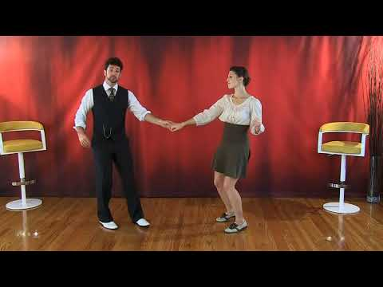
Exact named tutorial
Show the middle of the shared rotation in closed position, with the circular pathway readable.
Exact named tutorial
Capture the instant the follower is sent from closed toward open; joined hands form a strong diagonal.

Exact named tutorial
Use the compression/tuck moment immediately before the turn, not only the completed spin.
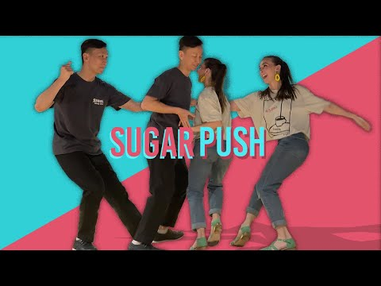
Exact named tutorial
Show maximum compression around counts 3–4, partners facing with bent elbows and grounded knees.
Exact named tutorial
Show both partners traveling in the same direction in a compact side-by-side V shape.

Combined inside/outside-turn tutorial
Show the follower halfway through inward rotation, connected hand above the turning pathway.
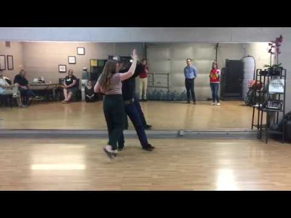
Combined inside/outside-turn tutorial
Show the follower halfway through outward rotation; shoulders clearly turning away from center.

Exact named tutorial
Capture the shoulder-to-shoulder crossing moment so the exchange of places is obvious.
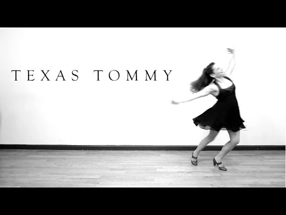
Exact named tutorial
Use a rear three-quarter view showing the follower’s hand transferred behind the lower back.
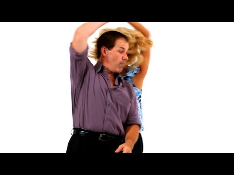
Exact named swing tutorial
Show the back-to-back or wrapped phase, with connected arms forming the recognizable rolling shape.
Exact named tutorial
Show the follower traveling inward from open just before closed position is completed.
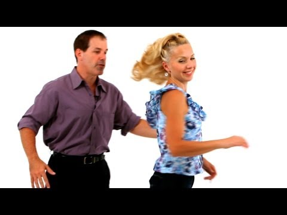
Free-spin tutorial
Show the follower released and rotating independently, with the former connection and travel direction still readable.
Exact sweetheart/cuddle tutorial
Show both partners facing the same direction, follower wrapped beside leader, crossed hand connections visible.
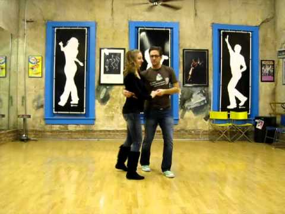
Closest named side-switch reference
Show the wrapped sweetheart position while partners exchange sides; preserve crossed-arm geometry.
Exact named tutorial
Show the approach from open into the rotational center, with the initial stretch still apparent.
Exact underarm-turn tutorial
Show the follower directly under the raised connected hand, full body and turning foot placement visible.
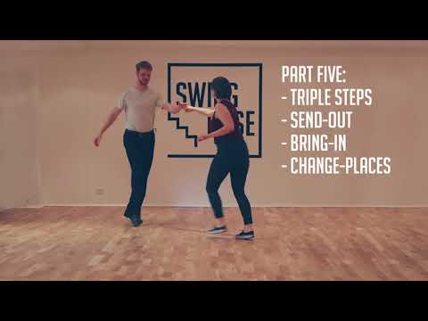
Broader Lindy fundamentals reference
Show relaxed side-by-side or open walking with visible pulse, bent knees, and directional groove.

Exact side-pass/change-place tutorial
Capture the moment one partner clears the other’s side, creating two opposing travel diagonals.
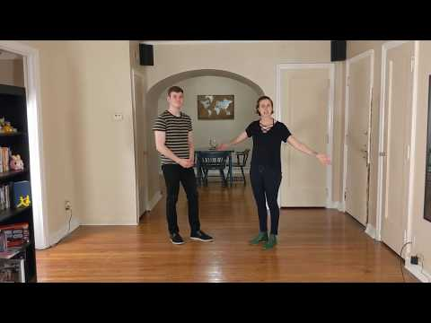
Multiple-turn tutorial
Show a clearly wound second rotation, with spotting, vertical axis, and raised hand path visible.
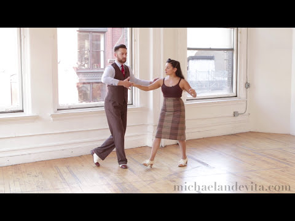
Exact traveling-tuck tutorial
Show the tuck turning while progressing across the floor rather than rotating in place.
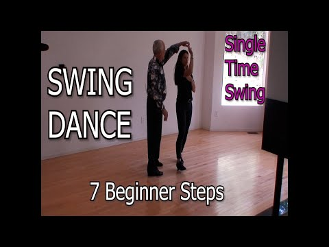
Closest swing Stop & Go reference
Show the checked/stopped position with a clear redirection setup and compact arm connection.
Closest side-pass family reference
Show the follower passing close to the leader’s shoulder, with that shoulder relationship central in frame.
Exact solo-jazz move tutorial
Show a strong profile or three-quarter silhouette emphasizing alternating torso lean and traveling feet.
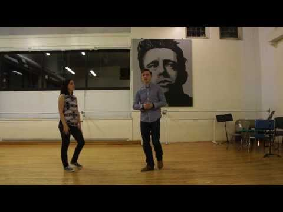
Exact named tutorial
Show the follower’s inside rotation at the end/top of the swingout while preserving open-position geometry.
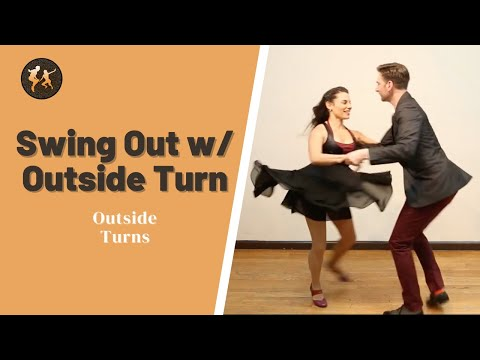
Exact named tutorial
Show the outward rotation at the swingout exit, with clear separation and spiral arm line.
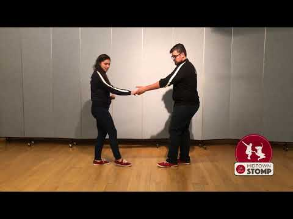
Swingout reference; ending variant requires frame selection
Show the final return into closed position, with leader’s receiving arm and follower’s inward path visible.
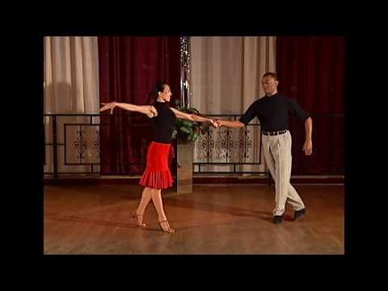
Closest named “Sliding Door” swing reference
Show partners passing in parallel lanes like sliding panels, ideally in a back-to-back or side-changing phase.

Charleston fundamentals reference
Show classic side-by-side position with matching opposite kicks and the leader’s arm around follower’s back.
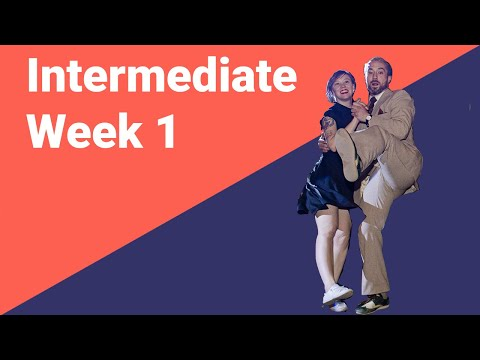
Charleston class reference
Show partners facing away on opposite diagonals with one-hand connection and mirrored kicks.

Tuck-turn entrance to Charleston reference
Show the tuck/turn transition while Charleston kick rhythm remains visible in the legs.
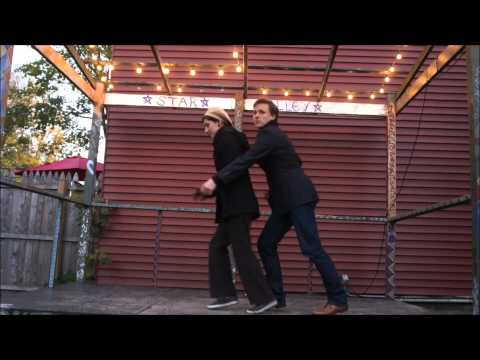
Tandem entrance tutorial
Show follower directly in front of leader, both facing same direction, staggered so four legs remain readable.

Tandem reference; rainbow frame must be selected
Show the connected arms arcing overhead during the side change, creating the characteristic rainbow silhouette.
Charleston fundamentals reference
Show the crossing kick-through at maximum leg extension, with partners offset enough to avoid overlap.
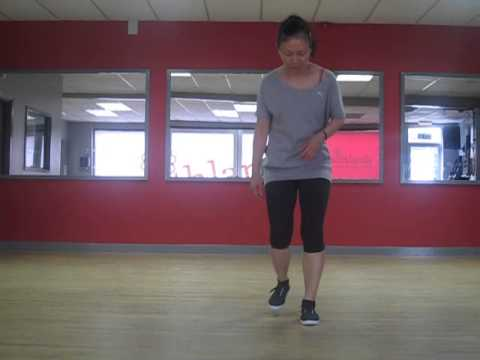
Closest break-rhythm instructional reference
Show the checked break with compact upper body and sharply readable weight change.
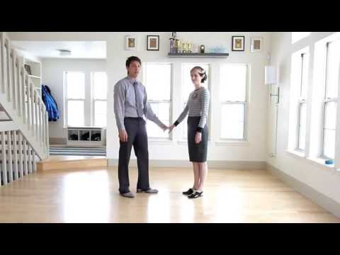
Closest partnered swing-turn reference
Show the pair rotating in compact closed hold, with Shag’s upright pulse and quick footwork emphasized.
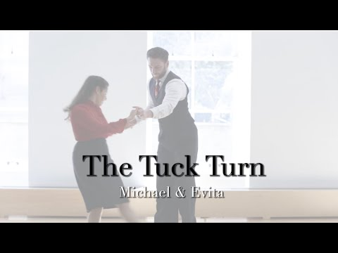
Closest tuck-turn mechanics reference
Show compression before the turn but redraw with Collegiate Shag posture and rhythm.
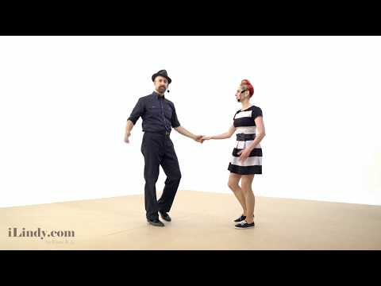
Closest pass-by mechanics reference
Show the crossing exchange plus rotation, with upright Shag posture and narrow foot placement.

Texas Tommy mechanics reference
Show the behind-the-back hand transfer, redrawn with Shag’s compact frame and faster rhythm.

Closest swing-kick fundamentals reference
Show alternating compact forward kicks with upright torso and pronounced Shag pulse.

Closest kick mechanics reference
Show one leg crossing clearly in front of the standing leg; use a front three-quarter angle.
Broad swing tutorial placeholder; needs Shag-specific frame validation
Show both dancers in a light hopping phase with bent supporting knees and the camel-like alternating leg action.